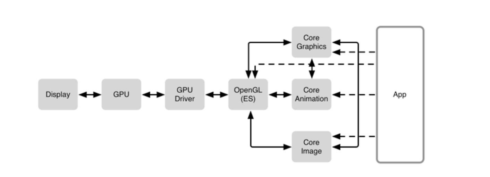

iOS如何将像素显示到屏幕
绘制像素到屏幕
参考文章绘制像素到屏幕
参考文章iOS视图，动画渲染机制
本文将总结
1. 位图数据如何存储的？
2. 像素绘制到屏幕上需要经历的流程？
3. CPU的工作是什么？
4. GPU的工作是什么？
5. 离屏渲染的取舍？
6. 绘制与动画的关系？
7. 渲染性能优化的总结
一.像素
显示在屏幕上的是什么?
当像素映射到屏幕的时候，每一个像素均由三个颜色组件构成：红，绿，蓝，透明度。三个独立的颜色单元会根据给定的颜色显示到一个像素上。例如在iPhone5的显示屏上是1136 *640个像素。
1.1 像素在内存里的默认布局
A R G B A R G B A R G B
| pixel 0 | pixel 1 | pixel 2
0 1 2 3 4 5 6 7 8 9 10 11 ...
1.2 二维数据
在实际使用像素数据时，有时会使用二位数据。就时颜色组件红，绿，蓝，alpha,每一个组件是一个数组。这样可以实现很好的对数据进行压缩或者其他处理。
二. 软件构成

Display(显示屏)
GPU
GPU Driver
OpenGL
CoreGraphics
CoreAnimation
CoreImage
GPU是一个专门为图形并发计算而量身定做的处理单元。
CoreAnimation使用CoreGraphics来做渲染。CoreGraphics在CPU里进行运算出数据，形成位图包装成纹理交给OpenGl进行操作GPU进行渲染。
2.1 工作大致流程
GPU需要将每一个frame的纹理合成在一起。每一个纹理会占用VRAM，
CPU开始程序时，会让CPU从bundle加载一张PNG的图片并且解压它，这所有的事情都在CPU上。在显示文本时，会促进CoreText和CoreGrapic生成一个位图(coreText排版器最终也是要绘制到图片上下文)，一旦准备好，它将会被作为一个纹理上传到GPU并显示出来。但滚动或者在屏幕上移动文本时，不管怎样，同样的纹理会能够复用，CPU只需要简单告诉GPU新的位置就可以，所有GPU可以重用存在的纹理，CPU并不需要重新渲染文本，并且位图也不需要重新上传到GPU。
三. 纹理合成
在简化的理解中，纹理相当于CoreAnimatio里的CALayer，纹理可以有位图内容，其实CALayer也是有位图内容的，对于每一个纹理，所有的纹理都以某种方式叠加在彼此的顶部。当两个纹理覆盖在一起时候，GPU要为所有像素做合成操作。
不透明的合成
在不透明时，即opaque=yes时，不用合成，直接取上面的纹理。这样就减少了合成的时间。（这也就是为什么在做性能优化时，减少层次关系，减少不必要的透明）mask合成
一个图层可以有一个和它相关联的 mask(蒙板)，mask 是一个拥有 alpha 值的位图，当像素要和它下面包含的像素合并之前都会把 mask 应用到图层的像素上去。当你要设置一个图层的圆角半径时，你可以有效的在图层上面设置一个 mask。但是也可以指定任意一个蒙板。比如，一个字母 A 形状的 mask。最终只有在 mask 中显示出来的(即图层中的部分)才会被渲染出来。
所谓的mask就是一mask的不透明区域，显示本身的内容。实际上mask也是一种合成。
3.1 离屏渲染
帧缓冲区
屏幕缓存区，在屏幕上屏幕外缓冲区
屏幕外缓冲区哪些情况会默认会强制进行离屏渲染?
CoreAnimation为了应用mask会强制进行屏幕外渲染。
CoreAnimation设置圆角半径会进行屏幕外渲染
CoreAnimation设置阴影也会出现屏幕外渲染
设置层为光栅化layer.shouldRasterize = yes
(特别说明下，rasterize是图层的光栅化，会造成离屏渲染)离屏渲染的性能取舍？
一般情况下需要避免离屏渲染，因为这是很大的消耗。直接将图层合成到帧的缓冲区（屏幕上）比先创建屏幕外缓冲区，然后将屏幕外缓冲区内容般到帧缓冲区要廉价很多。但有时候需要渲染树很复杂，可以强制离屏渲染那些图层，这样就可以缓存合成的结果。性能就会有所提升。（当使用离屏渲染时，GPU第一次会混合所有图层到一个基于新的纹理的位图缓存上，然后使用这个纹理来绘制到屏幕上）。当对这个纹理进行移动，变形等操作时，可以使用这个位图缓存。这样这部分的合成将减少很多工作。其实这就是做动画的流畅的原因。所以要不要离屏渲染，要看有取舍,一般对于静态的不经常变更的可以使用离屏，增加缓存。对于经常变更的就最好不要使用离屏。这样会增加建立屏幕外缓冲区的时间，以及屏幕内与屏幕外的切换时间。
3.2离屏渲染检测
Instrument的CoreAnimationg工具，Color Offscreen-Rendered Yellow，是检测离屏渲染。Color Hits Green and Misses Red 选项，绿色代表无论何时一个屏幕外缓冲区被复用，而红色代表当缓冲区被重新创建。
四. CoreAnimation与CoreGraphics与OpenGLES
CoreAnimation利用CoreGraphics绘制，CoreGraphics利用OpenGLES实现绘制。。
OpenGLES做的就是将纹理合并，做些另外的操作，比如mask，阴影等。OpenGLES对这些有层次关系的纹理进行合成，而这些具体的操作是通过GPU来实现的（也就是通过OpenGLES来操作GPU,OpenGLES只是编程接口）。
CoreAnimation重要的任务是判断出哪些图层需要被重新绘制，绘制完成后会有生成bitmap,CoreAnimion里的图层有backsore，就是一这个bitmap;这个bitmap可以是读取的图片数据，也可以是利用CoreGrapics绘制的。无论是给的图片还是自己通过CrorCrapics绘制的最终，提交把这个位图数据交个生成的纹理（这个纹理与这个Layer相对应）。
五. CPU瓶颈与GPU瓶颈优化
要在1/60里完成渲染工作，CPU与GPU的总时间不能操作这个时间。否则就会出现掉帧。
在出现性能瓶颈时, 我们采用Instrument里的，OpenGL ES Driver instrument 进行查看。
六. CoreGraphics
CPU实现的是位图绘制，这个绘制过程是用CoreGraphics完成的，也就是通过CPU进行计算而来。我们自己画的线条，长方形，通过CPU计算，最终将数据形成与CGContext里。
当渲染系统准备好，它会调用视图图层的-display方法.此时，图层会装配它的后备存储。然后建立一个 Core Graphics 上下文(CGContextRef)，将后备存储对应内存中的数据恢复出来，绘图会进入对应的内存区域，并使用CGContextRef 绘制
UIKit 版本的代码为何不传入一个上下文参数到方法中？
这是因为当使用 UIKit 或者 AppKit 时，上下文是唯一的。UIkit 维护着一个上下文堆栈，UIKit 方法总是绘制到最顶层的上下文中。UIGraphicsGetCurrentContext() 来得到最顶层的上下文。你可以使用 UIGraphicsPushContext() 和 UIGraphicsPopContext() 在 UIKit 的堆栈中推进或取出上下文。自己创建一个位图上下文
自己创建的CGContext，那么绘制的数据在这个自己创建的CGContext里，可以用这个CGGcontext形成位图或者图片。(这里可以自己绘制然后生成图片，也可以实现异步绘制，哈哈)
6.1 drawRect原理
当你调用 -setNeedsDisplay，UIKit 将会在这个视图的图层上调用 -setNeedsDisplay。这为图层设置了一个标识，标记为 dirty，但还显示原来的内容。它实际上没做任何工作，所以多次调用 -setNeedsDisplay并不会造成性能损失。当渲染系统准备好，它会调用视图图层的-display方法.此时，图层会装配它的后备存储。然后建立一个 Core Graphics 上下文(CGContextRef)，将后备存储对应内存中的数据恢复出来，绘图会进入对应的内存区域，并使用 CGContextRef 绘制。
当你使用 UIKit 的绘制方法，例如: UIRectFill() 或者 -[UIBezierPath fill] 代替你的 -drawRect: 方法，他们将会使用这个上下文。使用方法是，UIKit 将后备存储的 CGContextRef 推进他的 graphics context stack，也就是说，它会将那个上下文设置为当前的。因此 UIGraphicsGetCurrent() 将会返回那个对应的上下文。既然 UIKit 使用 UIGraphicsGetCurrent() 绘制方法，绘图将会进入到图层的后备存储。如果你想直接使用 Core Graphics 方法，你可以自己调用 UIGraphicsGetCurrent() 得到相同的上下文，并且将这个上下文传给 Core Graphics 方法。
总结下：检测是否需要重绘，需要重绘，若果实现了drawRect就会生成一个相应大小的后备存储。然后调用drawRect里的代码进行绘制。将数据写入上下文，幷形成新的后备存储。幷将新的后备存储交给GPU渲染。（这里如果不需要绘制，就不要重写drawRect方法了，这样就不会生成后没有必要的备存储对象了，以免造成性能的浪费），幷切每次出现重绘时，都会执行drawRect方法。造成时间和内存浪费。可以采用自己创建位图上下文，生成图片后，赋值给视图。这样可以避免不断绘制。
6.2 异步绘制
将一些耗时的工作，避过图片的获取，图片的解码等工作放到子线程中去做，形成图片后，在放到主线程里将图片放进去。
UIImageView *view; // assume we have this
NSOperationQueue *renderQueue; // assume we have this
CGSize size = view.bounds.size;
[renderQueue addOperationWithBlock:^(){
UIImage *image = [renderer renderInImageOfSize:size];
[[NSOperationQueue mainQueue] addOperationWithBlock:^(){
view.image = image;
}];
}];
6.3 图片解码
你需要知道在 GPU 内，一个 CALayer 在某种方式上和一个纹理类似。图层有一个后备存储，这便是被用来绘制到屏幕上的位图。
在给CALayer设置图片时，CoreAnimation会将其查看这个图片时否已经解码，没解码的化话进行解码(这里就是一个优化点，可以将解码的工作全部放到子线程里进行，哈哈)。
imageNamed:从 bundle 里加载会立马解压。一般的情况是在赋值给 UIImageView 的 image 或者 layer 的 contents 或者画到一个 core graphic context 里才会解压。
6.4 可变尺寸的图片
使用较小的图片好处
解码快
占用内存小
七. 完整的绘制与动画流程
动画在APP内部的4个阶段
布局：
在这个阶段，程序设置 View/Layer 的层级信息，设置 layer 的属性，如 frame，background color 等等。创建 backing image：在这个阶段程序会创建 layer 的 backing image，无论是通过 setContents 将一个 image 传給 layer，还是通过 drawRect：或 drawLayer:inContext：来画出来的。所以 drawRect：等函数是在这个阶段被调用的。
准备：在这个阶段，Core Animation 框架准备要渲染的 layer 的各种属性数据，以及要做的动画的参数，准备传递給 render server。同时在这个阶段也会解压要渲染的 image。（除了用 imageNamed：方法从 bundle 加载的 image 会立刻解压之外，其他的比如直接从硬盘读入，或者从网络上下载的 image 不会立刻解压，只有在真正要渲染的时候才会解压）。
提交：在这个阶段，Core Animation 打包 layer 的信息以及需要做的动画的参数，通过 IPC（inter-Process Communication）传递給 render server。
动画在APP外部的2个阶段
当这些数据到达 render server 后，会被反序列化成 render tree。然后 render server 会做下面的两件事：
根据 layer 的各种属性（如果是动画的，会计算动画 layer 的属性的中间值），用 OpenGL 准备渲染。
渲染这些可视的 layer 到屏幕。
如果做动画的话，最后的两个步骤会一直重复知道动画结束。
八. 渲染性能优化的总结
隐藏的绘制
UILabel将text画入backing image。也就是将文字搞成相对应的图片（文字最终都会是图片）。如果改了一个包含 text 的 view 的 frame 的话，text 会被重新绘制。Rasterize
当使用layer的shouldRasterize的时候，layer会被强制绘制到一个offscreen image上，并且会被缓存起来。这种方法可以在比较复杂的不会变化的图层上。离屏绘制
使用 Rounded corner， layer masks， drop shadows 的效果可以使用 stretchable images。比如实现 rounded corner，可以将一个圆形的图片赋值于 layer 的 content 的属性。并且设置好 contentsCenter 和 contentScale 属性。Blending
如果一个 layer 被另一个 layer 完全遮盖，GPU 会做优化不渲染被遮盖的 layer，但是计算一个 layer 是否被另一个 layer 完全遮盖是很耗 cpu 的。将几个半透明的 layer 的 color 融合在一起也是很消耗的。opaque
减少透明，减少合成时间drawRect
没有必要不要在drawRect里实现。可以采用异步绘制。图片解码
图片解码可以异步进行，不要在设置图片的时候解码